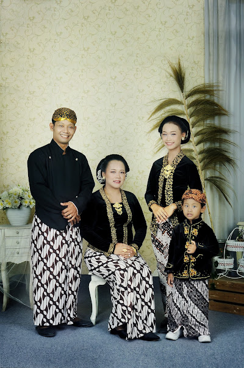
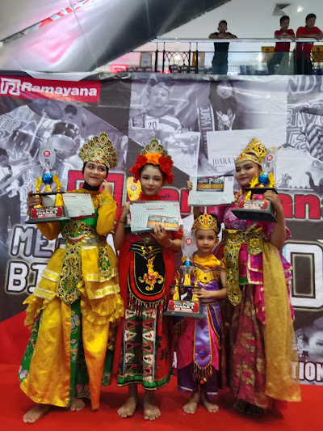
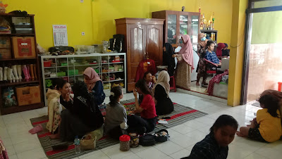
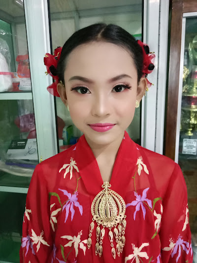

Pilihan Terbaik untuk MUA, Sewa Baju, dan Sanggar Tari di Kota Madiun. Kami melestarikan warisan melalui seni kecantikan dan gerak.




Sebagai pusat layanan **MUA Madiun** terkemuka, Wulandari Sanggar Tari hadir dengan dedikasi tinggi untuk melestarikan budaya melalui seni rias dan tari. Kami percaya bahwa setiap wajah memiliki cerita, dan setiap gerakan tari adalah doa yang divisualisasikan.
Didirikan di jantung kota Madiun, **Sanggar Tari Madiun** kami telah menjadi wadah bagi generasi muda untuk mempelajari keelokan budaya Nusantara, sementara layanan rias pengantin kami menggabungkan teknik modern dengan filosofi tradisional yang mendalam.
Riasan profesional untuk pernikahan, tunangan, hingga acara wisuda dengan teknik terkini.
Koleksi lengkap kebaya, toga wisuda, dan pakaian adat nusantara berkualitas premium.
Pelatihan tari tradisional untuk anak-anak hingga dewasa dan jasa pengisi acara.
Tim ahli berpengalaman di bidang seni rias dan tari.
Mudah dijangkau di pusat kota Madiun.
Kualitas premium dengan harga kompetitif.
Satu tempat untuk semua kebutuhan acara Anda.
"Sangat puas rias wisuda di sini. MUA-nya ramah, hasilnya natural tapi tetep manglingi. Lokasinya juga gampang dicari di Madiun."
"Sewa baju adat buat anak sekolah lengkap banget koleksinya. Baju bersih dan ukurannya pas. Pelayanannya sat-set!"
"Sanggar tari yang oke banget di Madiun. Anak saya jadi lebih percaya diri tampil di panggung. Pelatihnya sabar-sabar."
Harga sangat bervariasi tergantung jenis layanan. Di Wulandari, harga rias mulai dari 500rb untuk paket MUA standar, dan sewa baju mulai dari 100rb.
Kami berlokasi strategis di Kota Madiun, menjadikannya pilihan terdekat bagi Anda yang mencari sewa kebaya atau toga wisuda berkualitas dengan harga terjangkau.
Ya, tim MUA kami melayani panggilan ke rumah atau hotel di area Madiun dan sekitarnya untuk acara pernikahan atau pre-wedding.
Pendaftaran sanggar tari bisa dilakukan langsung di lokasi atau melalui WhatsApp dengan menanyakan jadwal latihan yang tersedia untuk berbagai tingkatan umur.